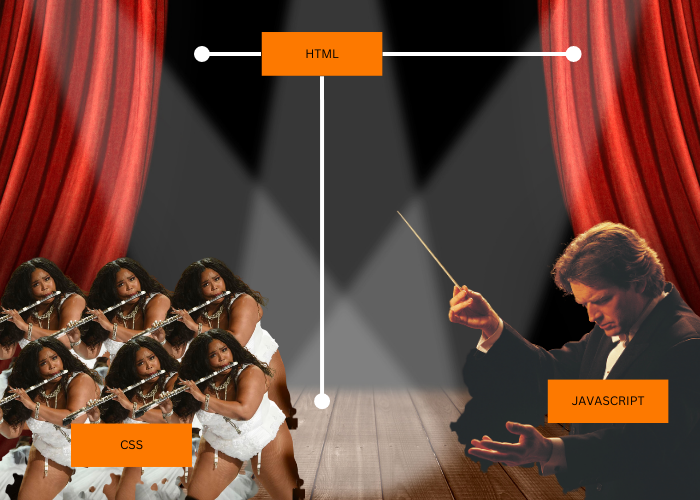

Demystifying JavaScript for Beginners: Understanding the Web Trio and Core Concepts
1. JavaScript: The Orchestra Conductor
Imagine a symphony orchestra performance. The orchestra consists of musicians who play different instruments, such as violins, cellos, and trumpets. In this analogy, HTML represents the stage and structure, CSS is the costumes and makeup that beautify the performance, and JavaScript acts as the conductor, guiding the musicians and coordinating their actions. JavaScript brings interactivity and dynamic behavior to the static HTML and CSS, making the web experience engaging and responsive.
2. Control Flow and Loops: Cooking up a Recipe
Think of control flow as a step-by-step process you follow when cooking a recipe. Each step depends on the previous one, and you may repeat some steps until a certain condition is met. For example, imagine making a pizza. You start by preparing the dough, then adding toppings, and finally baking it. Control flow in JavaScript works similarly, executing code line by line, making decisions based on conditions, and using loops to repeat certain tasks until a specific condition is satisfied.

3. The DOM: Interacting with Web Elements
The Document Object Model (DOM) is a representation of the HTML elements on a web page. It's like a tree structure where each element is a node, and they have parent-child relationships. With JavaScript, we can interact with these elements and modify their properties, styles, and content. For example, we can use JavaScript to change the text of a button, show or hide an element, or dynamically create new elements. The DOM provides a powerful interface for manipulating web pages dynamically.

4. Accessing Data: Arrays vs. Objects
In JavaScript, we can store and retrieve data using arrays and objects. An array is like a list of items, where each item has an index starting from 0. We can access elements in an array by their index. On the other hand, objects are like containers that store data as key-value pairs. We can access object properties using their keys. For example, if we have an array of fruits, we can access the third fruit using index 2 (since arrays are zero-based). If we have an object representing a person, we can access their age by referencing the "age" property. Arrays and objects provide different ways to organize and access data, depending on our needs.

5. Functions: The Reusable Recipes
Functions in JavaScript are reusable blocks of code that perform specific tasks. They allow us to organize our code, avoid repetition, and make it more modular. Functions can take inputs, called parameters, perform operations, and return a value. They can be called multiple times with different inputs to execute the same set of instructions. For example, imagine a function called "calculateArea" that takes the length and width of a rectangle as parameters and returns its area. By calling this function with different values, we can calculate the areas of various rectangles without duplicating code. Functions play a vital role in structuring our code and making it more maintainable.

Putting It All Together: Writing JavaScript Code
JavaScript code is written using a combination of variables, operators, control structures, functions, and other language features. By leveraging the power of JavaScript, we can create dynamic web experiences, handle user interactions, and perform complex calculations. Learning JavaScript opens up a world of possibilities for web development, allowing you to build interactive websites and web applications.